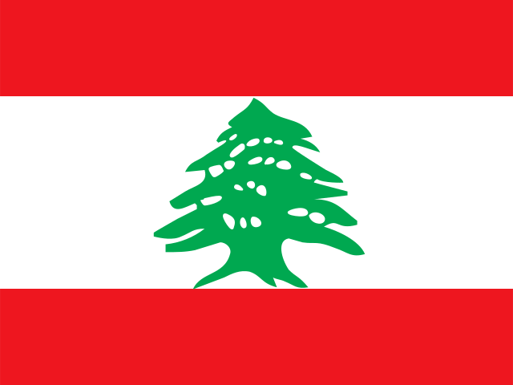

Countries › Oceania
Nauru
Where Nauru stands out
▲ MOST
5th Monaco1,967,370
Monaco1,967,370
6thNauru1,428,571
7th Kiribati1,409,371
Kiribati1,409,371
6th of 192 · Central Intelligence Agency (CIA) World Factbook and World Bank (derived), 2024
▲ MOST
10th Rwanda587
Rwanda587
11thNauru565
12th

Lebanon56411th of 192 · World Bank, World Development Indicators (WDI), 2023
▲ MOST
9th Belarus111.7
Belarus111.7
10thNauru109.4
11th Samoa109.0
Samoa109.0
10th of 171 · Food and Agriculture Organization (FAO) Food Balance Sheets, 2023
▲ MOST
11th Philippines18.8%
Philippines18.8%
12thNauru16.2%
13th Vietnam15.7%
Vietnam15.7%
12th of 189 · FAO, via World Bank, WDI, 2023
Size, sea and borders
21 km²193rd of 195
30 kilometres (km)145th of 193
Coastline for its sizeCIA World Factbook and World Bank (derived), 2024 · web.archive.org (cia.gov)
1,428,571 m per 1,000 km²6th of 192
Number of land bordersGeoNames, 2026-08 · download.geonames.org
0158th of 195, tied with 37
Land and height
70 m189th of 194
Open grass and tundraEuropean Space Agency (ESA) WorldCover 2021, via Food and Agriculture Organization statistical database (FAOSTAT), 2021 · bulks-faostat.fao.org
34.4% of the country30th of 194
2.2%22nd of 194
Orchards and plantationsFAO, via World Bank, WDI, 2023 · data.worldbank.org
16.2% of land12th of 189
People
11,875 people193rd of 195
Population densityWorld Bank, WDI, 2023 · data.worldbank.org
565 people per km²11th of 192
20.4 years150th of 195
62.1 years181st of 195
Share of people born abroadUnited Nations Department of Economic and Social Affairs (UN DESA) International Migrant Stock 2024, 2020 · un.org
18.9%26th of 194
Share of its people living abroadUN DESA International Migrant Stock 2024, 2020 · un.org
20.1%24th of 193
Food, power and travel
109 kg per person a year10th of 171
35.0 kg per person a year21st of 170
Poultry supplyFAO Food Balance Sheets, 2023 · bulks-faostat.fao.org
53.4 kg per person a year14th of 171
85.4 kg per person a year11th of 171
1185th of 189, tied with 4
Road per 100 km² of landCIA World Factbook and World Bank (derived), 2024 · web.archive.org (cia.gov)
143 km31st of 187
Showing 20 highlights for Nauru. Rank counts from the highest value among the countries that have data: 1st is the most. Ties share a rank. Data version 91, 22 November 2026.
Sort Nauru against four others
The game has figures for Nauru on 118 of its 190 questions.
The same game for Android and iOS. It launches on 10 December 2026.
Out now.